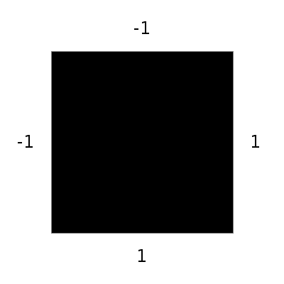
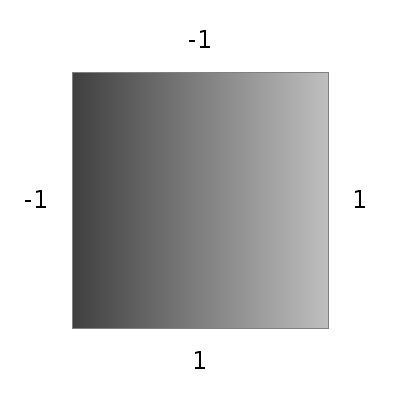
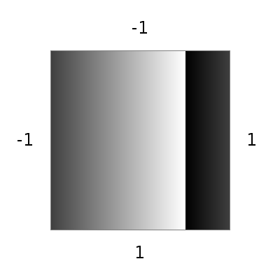
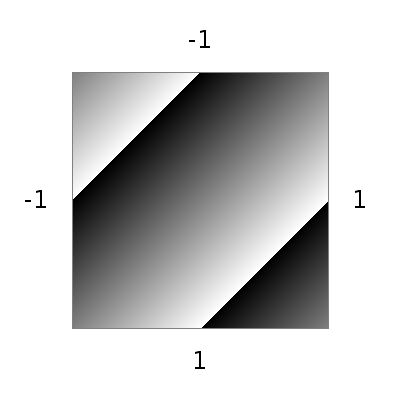
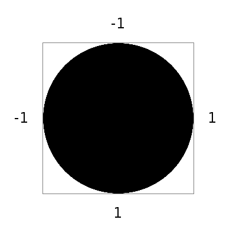

Mediascripting, Summer 2014
Research at the intersection of ...
- Functional problem solving
- Image making
- [A bit of education]
Primary Project: Mediascripting
Scripting empowers users!
- Automate complex tasks
- Explore variations
- Create new capabilities
- Achieve precision
This Summer: A Detour
Challenge people to think about things in a new way
- Image making
- Problem solving
- Functions
Problem Solving, Abstract Images, and Functions: A Primer
This is the world.
This is the function [-1].

This is the function [0].

This is the function [1].
This is the function [x].
This is the function [y].
That is ...
- All values in the world are between -1 and 1.
- Values are also colors (-1 black to 1 white).
- Functions map each (x,y) coordinate to a value.
- Functions == images.
This is the function [-x].

This is the function [sign of y].

This is the function [sign of x].

This is the function [sign of -x].
Is it also [-(sign of x)?]

This is the function [x*1/2].
It is also [1/2*x]

This is the function [x*1/4].
What is [x*y]?
Is it answer 1?
Or answer 2?
Or answer 3?
Or answer 4?

This is the function [x+1/2]
This is the function [x+1].
This is the function [x+y]
Addition
- 1 is the largest number; 1 + 1/2 = 1.
- -1 is the smallest number; -1 _ -1/2 = -1.
- Can we think of alternatives?
This is the function [rotate x by 1]

This is the function [rotate x by 1/2]

This is the function [rotate x by y]

What is this function?
What is this function?

Does it help if we find this function first?
Beyond The Basics
More Features (1)
- More functions: sine, cosine, max, min, etc.
- Time-based function: second, minute, hour, day
- Interactive functions: mouseX, mouseY, clickX, clickY
More Features (2)
- Color (three functions, rather than one)
- Transformations (?)
- Genetic algorithms
The Project
Research Goal
Build a system that
- Allows nonprogrammers to explore these issues (and learn problem solving)
- Is easy and fun to use
- Allows sharing of functions (both "source" and "image")
- Is web-based [probably]
Design Tasks
Representing functions
- In text form
- In graphical form
- Internally, for processing
Design Tasks
Features
- What functions do we provide?
- What other features? (see above)
Design Tasks
Presenting the system
- Will the primer approach work?
- What kinds of tasks should we give?
- What are motivating examples?
Design Tasks
User Interface
Implementation Tasks